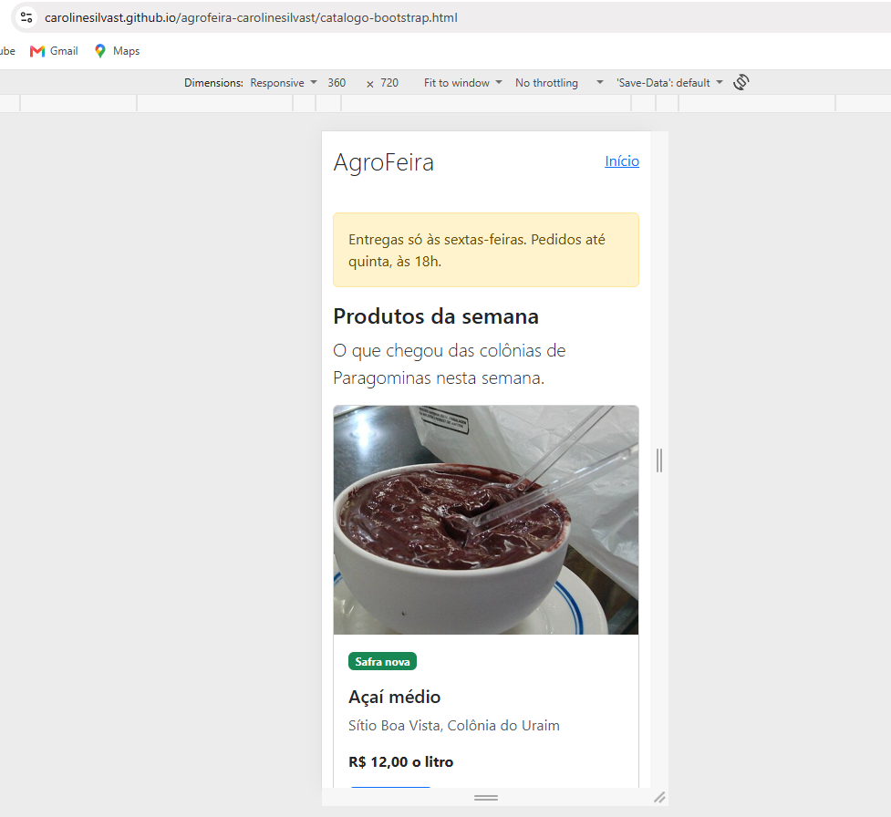
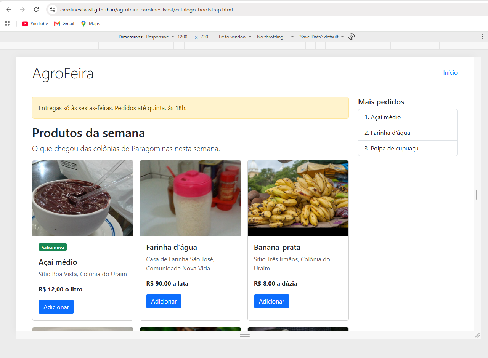
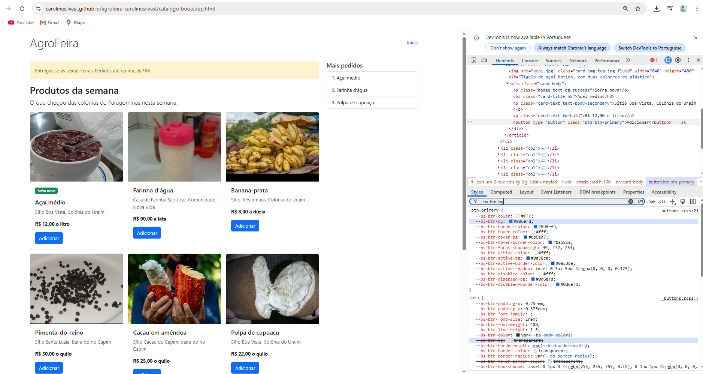
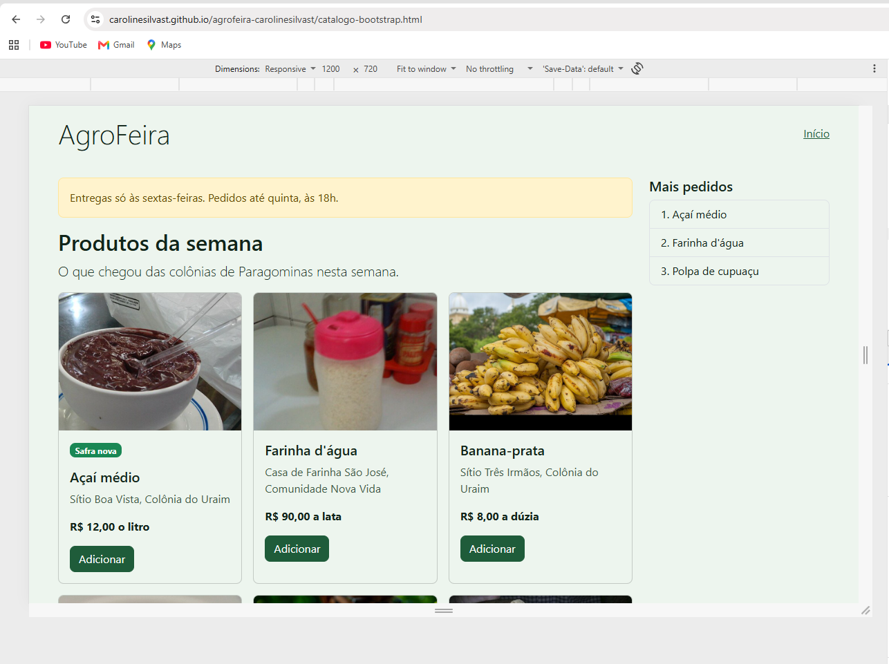
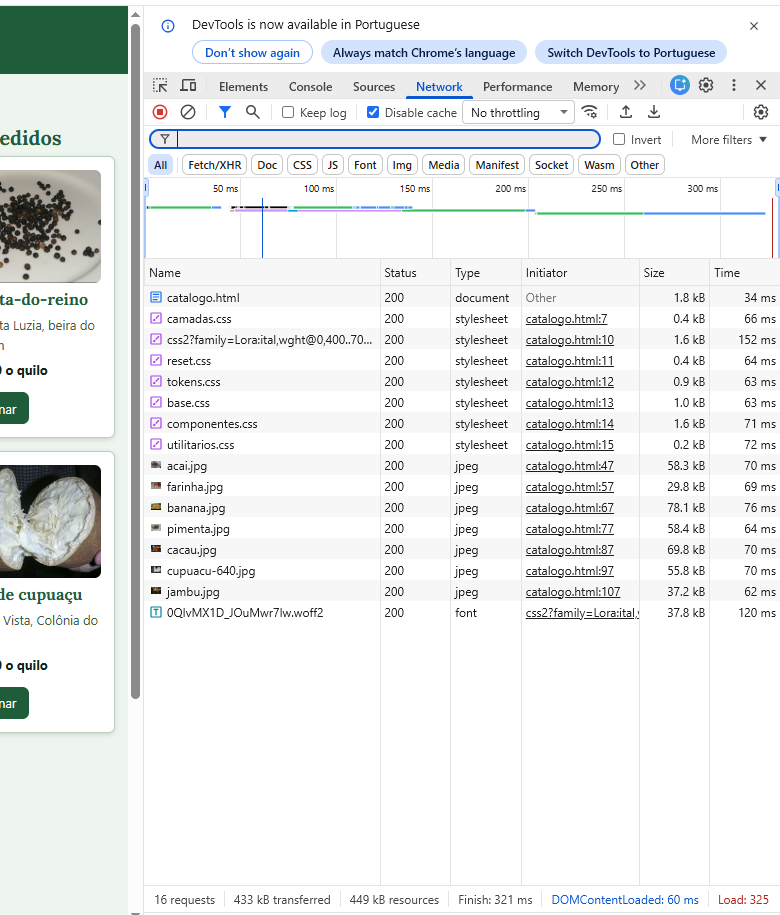
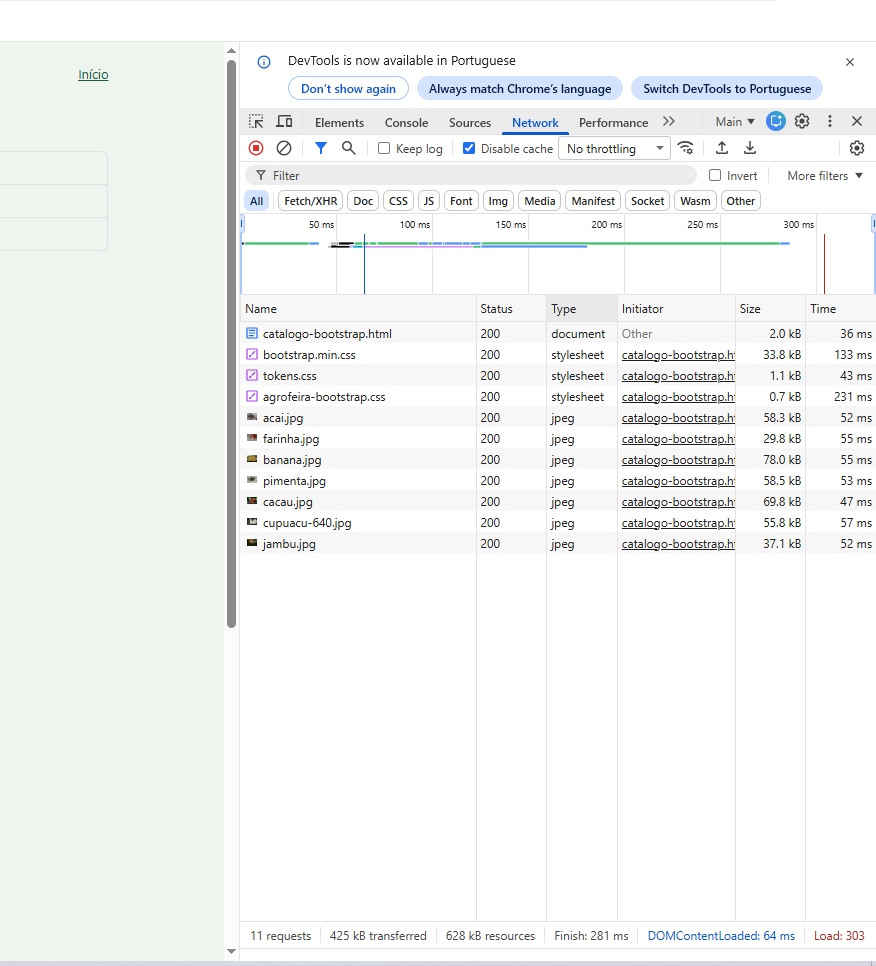
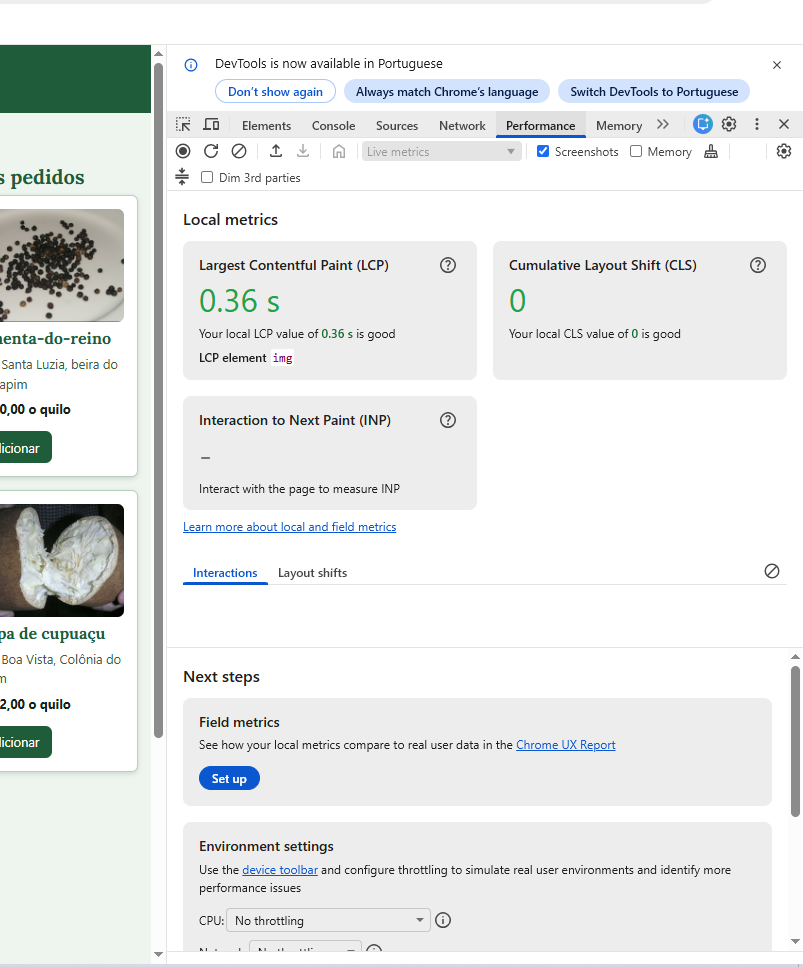
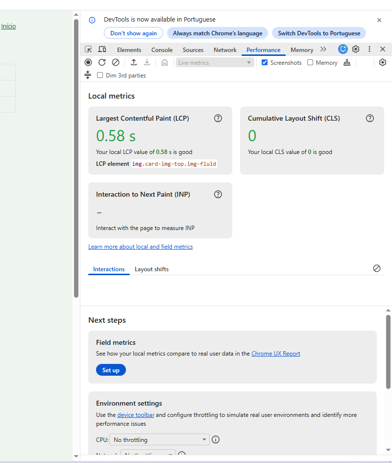

Comparativo: o catálogo autoral e o catálogo em Bootstrap
Aluno: Caroline Silva Matrícula: 2024003057.
Repositório: https://github.com/carolinesilvast/agrofeira-carolinesilvast
Endereços do site:
- https://carolinesilvast.github.io/agrofeira-carolinesilvast/
- https://carolinesilvast.github.io/agrofeira-carolinesilvast/catalogo.html
- https://carolinesilvast.github.io/agrofeira-carolinesilvast/catalogo-bootstrap.html
0. O catálogo em três larguras
Em 360 px, o catálogo em Bootstrap tem 1 coluna de cartões, a lista "Mais pedidos" não aparece e o teste de rolagem deu false.
Em 768 px, o catálogo em Bootstrap tem 2 colunas de cartões, a lista "Mais pedidos" não aparece e o teste de rolagem deu false.
Em 1200 px, o catálogo em Bootstrap tem 3 colunas de cartões, a lista "Mais pedidos" aparece e o teste de rolagem deu false.


1. A customização
| Variável alterada | Valor (token) | Por quê (o que muda na tela) |
|---|---|---|
| --bs-body-bg | var(--cor-fundo) | Muda o fundo da página inteira para a cor do projeto. |
| --bs-link-color-rgb | var(--cor-marca-rgb) | Muda a cor do link "Início" para a cor da marca. |
| --bs-btn-bg / --bs-btn-hover-bg | var(--cor-marca) / var(--cor-marca-forte) | Muda o fundo do botão "Adicionar" no estado normal e com o ponteiro em cima. |
Por que a --bs-primary sozinha não muda o botão: Ao inspecionar o botão no F12 (Captura 3), vimos que a regra .btn-primary (do arquivo _buttons.scss) não lê a variável global --bs-primary. O fundo do botão é definido pela variável local --bs-btn-bg, que tem um valor fixo em hexadecimal (#0d6efd). Para mudar a cor do botão, precisamos sobrescrever essa variável local.

Antes e depois: O fundo era branco de fábrica e agora é --cor-fundo. O botão era azul e agora é --cor-marca. O link "Início" era azul e agora é --cor-marca. Os cantos eram de 6px e agora são --raio.

2. As medições
Medi as duas páginas no endereço público, no Chrome, com a caixa Disable cache e Disable network cache marcadas, na janela com largura de 1920 px e altura de 1080 px.
| Critério | Autoral (catalogo.html) | Bootstrap (catalogo-bootstrap.html) |
|---|---|---|
| CSS transferido | 6,9 kB (1,6 kB do Google Fonts) | 35,6 kB (33,8 kB + 1,1 kB + 0,7 kB) |
| Fontes | 37,8 kB | 0,0 kB |
| Imagens | 368,9 kB | 368,9 kB |
| Documento | 1,8 kB | 2,0 kB |
| Total transferido | 433 kB | 425 kB |
| LCP (mediana) | 0,32 s (0.70, 0.32, 0.57, 0.27, 0.22) | 0,55 s (0.55, 0.23, 0.60, 0.58, 0.36) |
| Linhas de CSS próprio | ~250 linhas | ~50 linhas (tokens + agrofeira) |
| Classes no cartão do açaí | 4 classes em 4 elementos | 13 classes em 9 elementos (sem o selo) |




3. A leitura dos números
Os bytes. O catálogo em Bootstrap baixou 35,6 kB de CSS, contra 6,9 kB do autoral. Isso significa que o Bootstrap trouxe cerca de 5 vezes mais código de estilo. Se desconsiderarmos a folha do Google Fonts no autoral (1,6 kB), a diferença é ainda maior: o Bootstrap é quase 7 vezes mais pesado em CSS. O total transferido da página inteira não é um bom critério para comparar o framework porque as duas páginas baixam as mesmas 7 fotos (cerca de 368 kB), mas apenas o autoral baixa a fonte do Google Fonts (37,8 kB), mascarando o peso real do CSS.
O LCP. O LCP do autoral foi de 0,32 s e o do Bootstrap foi de 0,55 s. A variação entre as cinco cargas foi de 0,48 s para o autoral e 0,37 s para o Bootstrap. A diferença entre os dois valores do meio (0,23 s) é menor que a variação natural das cargas, o que significa que não é possível afirmar categoricamente qual é mais rápido apenas com esses dados. O LCP mede o tempo do maior elemento (neste caso, as imagens dos cartões), e o conteúdo visual das duas páginas é idêntico.
As linhas e as classes. O CSS autoral tem cerca de 250 linhas e o Bootstrap tem cerca de 50 linhas (excluindo o framework em si). No HTML, o cartão do autoral tem 4 classes, enquanto o do Bootstrap tem 13 classes. O trabalho de mudar uma decisão global no autoral mora no arquivo componentes.css; no Bootstrap, mora na variável --bs-btn-bg no agrofeira-bootstrap.css. O CSS autoral contém regras para outras páginas (como a tabela de safra e o formulário de cadastro) que não são usadas no catálogo.
O que a medição não mostra. A medição de bytes não mostra o custo de manutenção do framework no futuro, caso seja necessário atualizar a versão do Bootstrap (quebra de compatibilidade). Também não mostra o tempo de aprendizado da equipe para lidar com as classes utilitárias do framework.
Controle e trabalho. O catalogo.html tem o link de pular, o menu, a barra de categorias, a container query do cartão e o :has() do foco. Nenhum desses recursos está no catalogo-bootstrap.html. Implementar o foco do botão via :has() exigiu 4 linhas de CSS na Atividade 4. No Bootstrap, as decisões de layout e de cores são fortemente guiadas pelos pontos de quebra e variáveis pré-definidas do framework, o que limita a customização.
4. Conclusão
Usaria o Bootstrap em um projeto rápido de prototipagem ou numa página de administração interna, porque ele entrega componentes prontos e responsivos com pouco esforço, como visto no Bootstrap ter 35,6 kB de CSS contra 6,9 kB do autoral; não usaria na AgroFeira, porque o peso do framework (35,6 kB) é muito maior do que o CSS estritamente necessário para uma vitrine simples, e o controle sobre o design e acessibilidade (como o link de pular e o menu) exige mais trabalho de customização.